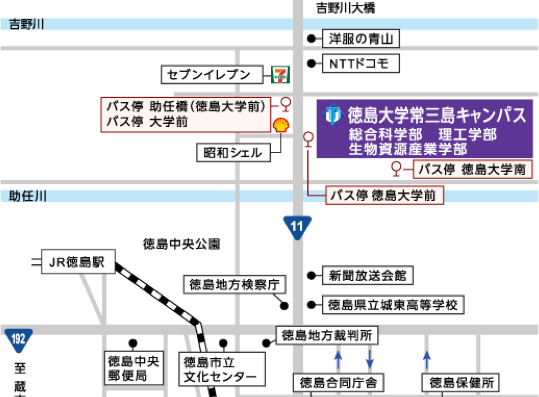

11/2-3 あすたむらんど サイエンスフェア2019 に出展いたしました。
あすたむらんど サイエンスフェア2019 おもしろ博士の実験室
『プログラミングで作ろうおもしろペット』
Why!?プログラミングフェス2019に出場しました。
Why!?プログラミングフェス2019
番組動画
作品紹介
9/1 マインクラフト子どもプログラミング！「グレートハッカーを目指せ！」を開催しました。
開催レポート https://www.pref.tokushima.lg.jp/ippannokata/sangyo/ict/5030344
Impress Watch > 教育版マインクラフトで伝える、“自分の頭で考える”プログラミングの大切さ


はじめてのプログラミング教育 in 徳島
はじめてのプログラミング教育 in 徳島 を令和元年5月12日午後に開催しました。（報告は後日）
参加申込 https://pedutokushima.connpass.com/event/130628/
とくしまプログラミングフェスタ2019
とくしまプログラミングフェスタ 2019 を徳島大学フューチャーセンターにて、令和元年5月12日に開催しました。（報告は後日）
参加申込 https://t.co/vYRj5V3IdQ
チラシ
クラウドファンディングにチャレンジしました。 - OTSUCLE
徳島県内でたくさんコーダー道場を立ち上げるための資金を募りました。
https://otsucle.jp/cf/project/1654.html
コーダー道場徳島とは？ - What's CoderDojo Tokushima?
Kids who start programming
プログラミングを極めたい人
Kids who master programming
みんなで楽しくプログラミングしたい人
Kids who enjoy programming
作ったプログラムを見せびらかしたい人
Kids who share your program
そんな人たちを、忍者とよびます。
Such kids are called Ninja.
ご存知ですか？
Do you know...
そんな忍者のための道場が徳島にあることを！
there is a dojo for Ninja kids in Tokushima!?
そう、それが コーダー道場@徳島 です。
Yes, it's the CoderDojo Tokushima.
さあ、参加登録して、忍者になりましょう。
Come on! Join us! And become Ninja!

参加申し込み - Ninja Form
スケジュール - Schedule

アクセス - Access
徳島大学 情報センター - Tokushima University
常三島キャンパス
見学・メンター申し込み - Menter Form
本サイトのソースコードは GitHub 上で公開されています。
Copyright © 2018 CoderDojo Tokushima
徳島県徳島市南常三島町2-1 徳島大学 情報センター